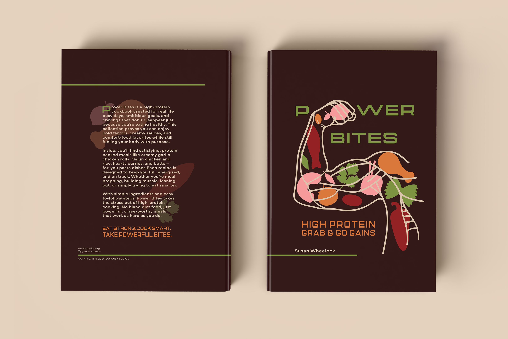
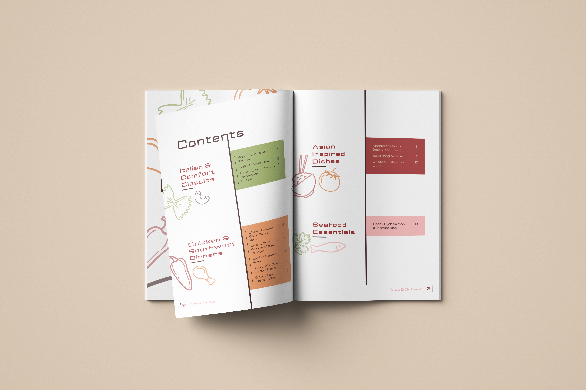
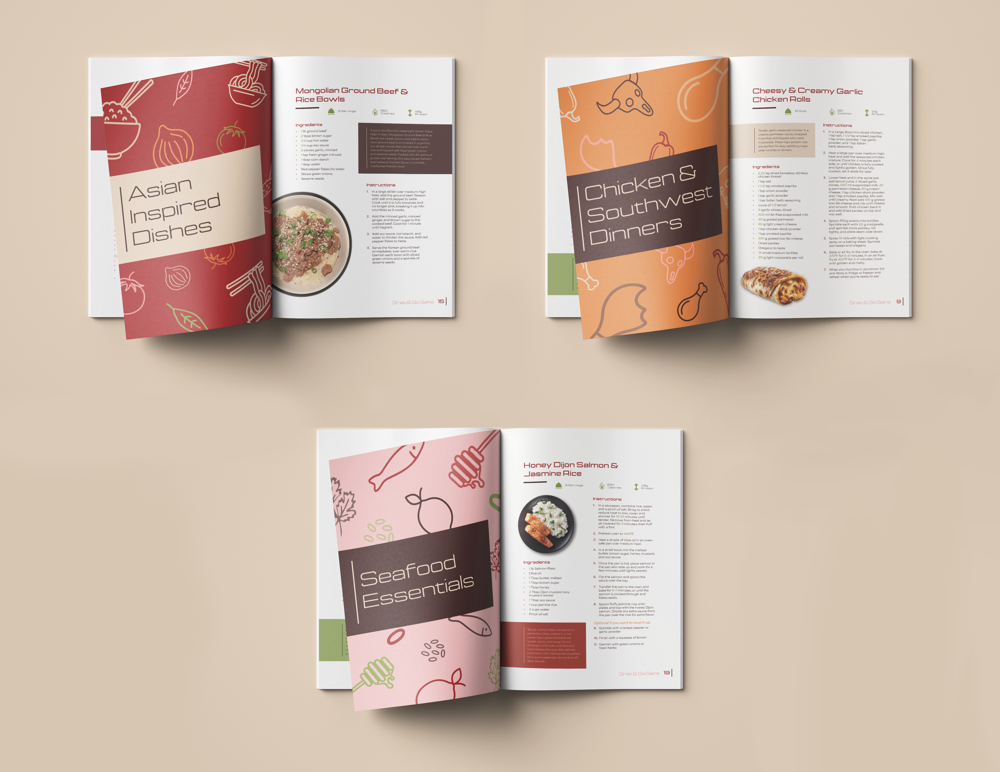
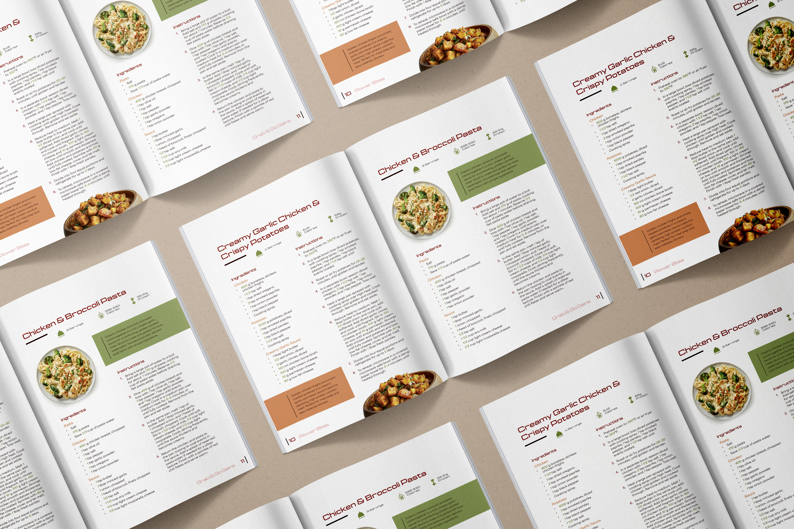

Power Bites Cookbook
In my project Power Bites, I designed a high protein cookbook for busy people who still want bold, comforting meals. The layout focuses on clarity and strong structure, creating a design that feels energetic while remaining easy to navigate.
I also developed a color palette connected directly to the recipes, naming the colors after featured foods. This approach reinforces the intention behind each design choice and strengthens the overall meaning and connection between the visual design and the content of the book.
Tools: Adobe InDesign, Adobe Illustrator, Adobe Photoshop
Year: Spring, 2026



